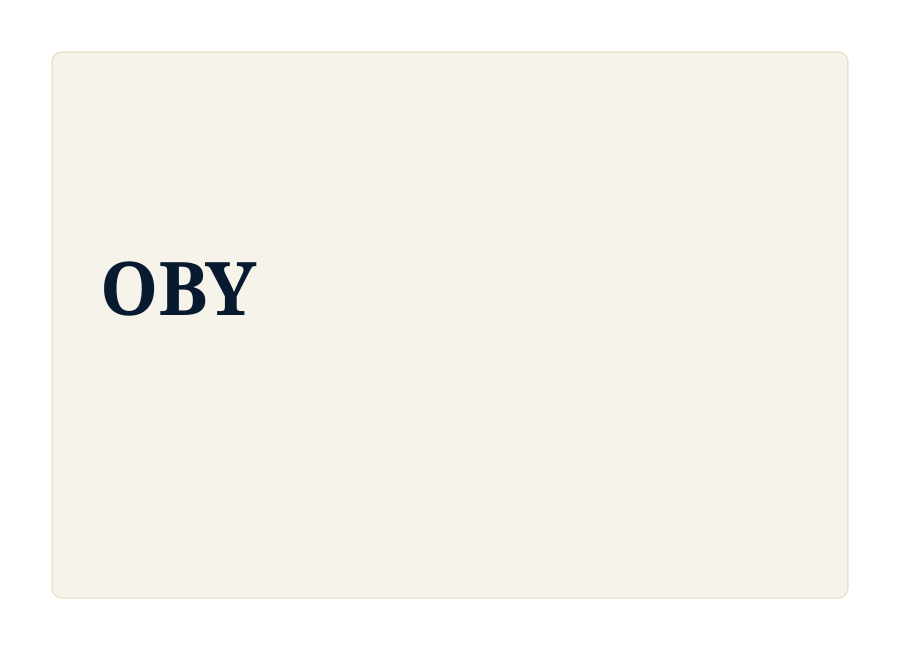

Gouvernance maritime
Les événements liés à l'INDEMER, aux académies de marine, au Golfe de Guinée, à l'accord du Cap ou à l'action de l'État en mer situent le parcours dans des cadres juridiques et institutionnels exigeants.

Une cartographie sobre d'espaces académiques, scientifiques, institutionnels et professionnels reliés aux axes OBY, présentée selon les rôles effectivement exercés.

Cette page ne présente pas un catalogue d'apparitions. Elle rassemble des participations vérifiées à des colloques, séminaires, ateliers, forums, écoles d'été et espaces de dialogue reliés au droit de la mer, à la gouvernance maritime, au littoral, à l'environnement marin, à la médiation, à l'innovation, à la prospective et à l'entrepreneuriat académique.
Les événements liés à l'INDEMER, aux académies de marine, au Golfe de Guinée, à l'accord du Cap ou à l'action de l'État en mer situent le parcours dans des cadres juridiques et institutionnels exigeants.
Les participations autour de PROTEUS, MedPAN, WACA, des pollutions, des aires marines protégées et de la Méditerranée relient droit, territoires, vulnérabilités et adaptation.
Les entrées liées à la médiation, à l'OHADA, à l'arbitrage et aux différends maritimes renforcent une approche attentive aux conflits d'usage et aux modes de règlement.
Les forums, rencontres Pépite, espaces d'innovation et événements liés à l'économie bleue montrent une passerelle entre recherche, projet, impact et besoins de terrain.
Sommet de Lomé, accord du Cap, Convention d'Abidjan, WACA, journées environnementales et Dialogue des politiques à Abidjan structurent un premier ensemble maritime, institutionnel et environnemental.
COP24 / COY14, contentieux de la délimitation maritime africaine, économie bleue dans le Golfe de Guinée et arbitrage forment un deuxième ensemble juridique et international.
ERSUMA/OHADA, Euromaritime, colloque sûreté maritime et travaux autour de l'obligation de protéger le milieu marin prolongent les liens entre droit, sécurité, innovation et environnement.
PROTEUS, MedPAN, Forum Mouillage Méditerranée, Pépite Provence, Emerging Valley, INDEMER et Académies de marine européennes inscrivent la trajectoire dans des espaces méditerranéens, scientifiques et entrepreneuriaux.
Consulter les traces documentaires publiables ou conservées prudemment en lien avec les événements.
AxesRelier les participations aux orientations structurantes du site OBY.
ExplorerParcourir les sujets, ressources et liens intellectuels associés.
VeilleSuivre quelques repères institutionnels et académiques liés aux mêmes domaines.